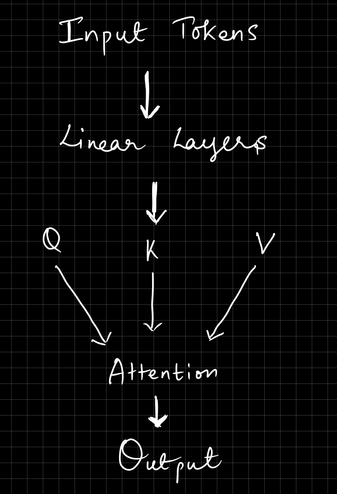

While studying deep learning, I kept hearing that attention is one of the most important ideas behind modern AI systems like ChatGPT and Vision Transformers. To understand it better, I read the paper Attention Is All You Need by Vaswani et al. (2017).
This blog is my attempt to explain the main ideas in a simple way. I will focus on the attention mechanism itself rather than the entire Transformer architecture.
Before Transformers became popular, models such as RNNs and LSTMs were commonly used for sequence tasks. These models process one word at a time.
The problem is that it becomes difficult for them to remember information that appeared many words earlier in a sentence.
Consider this sentence:
"The cat sat on the mat because it was tired."
To understand the word "it", we need to know that it refers to the cat. Attention gives the model a way to directly look at other words that might be important, instead of trying to remember everything through a long chain of computations.
The terms Query, Key and Value (Q, K and V) looked confusing when I first saw them. The easiest way for me to think about them is using a library example.
Imagine walking into a library and searching for a book about machine learning. Your search request is the Query. The labels on the books are the Keys. The actual content inside the books are the Values.
The attention mechanism compares the Query with all Keys and then retrieves information from the most relevant Values.

This is a simple diagram I created while trying to understand how Q, K and V interact.
Every input token first gets converted into an embedding vector.
The Transformer then uses three different learned linear layers:
Even though all three come from the same original embedding, they learn different roles during training.
The paper defines attention using the following equation:
When I first saw this equation, it looked intimidating. Breaking it into steps made it much easier.
We calculate a dot product between a Query and every Key. This tells us how similar they are.
A higher score means the model thinks those two tokens are more related.
The scores are converted into probabilities using softmax. The probabilities add up to 1 and tell us how much attention should be given to each token.
These probabilities are then used as weights for the Value vectors. The weighted combination becomes the output of the attention layer.
One thing I found interesting was the division by √dk.
If the vectors become very large, the dot-product scores also become very large. This causes the softmax output to become extremely sharp.
When that happens, training becomes harder because gradients become less useful.
Dividing by √dk keeps the values at a reasonable scale and helps training stay stable.
A question I had while reading the paper was:
Why not just use one attention mechanism?
The answer is that different relationships may exist in the same sentence.
One attention head might focus on nearby words. Another might focus on grammar. Another might focus on long-range relationships.
By using multiple attention heads, the model can learn several different types of patterns at the same time.
This is more powerful than forcing a single attention layer to learn everything.
Unlike RNNs, Transformers process all tokens at once.
This is great for speed, but it creates a problem:
How does the model know which word comes first?
The solution is positional encoding.
Positional information is added to token embeddings before they enter the Transformer.
The original paper uses sine and cosine functions to generate these position values.
Without positional encoding, sentences with different word orders could look identical to the model.
One reason I wanted to understand attention is because it appears again in Vision Transformers (ViTs).
In NLP, tokens represent words.
In Vision Transformers, tokens represent image patches.
The same self-attention mechanism is used to determine which image regions are important.
This means the core idea introduced in the Transformer paper is not limited to language. It is now used across many different areas of AI.